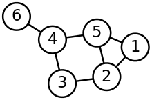
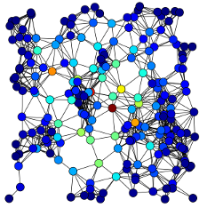
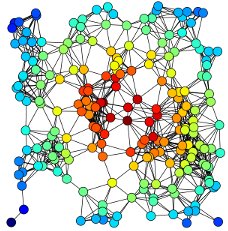

Par Etienne DELAY / @ElCep
On s'intéresse aux métrique du réseau:
«In graph theory, the shortest path problem is the problem of finding a path between two vertices (or nodes) in a graph such that the sum of the weights of its constituent edges is minimized.»
«The degree of a node in a network (sometimes referred to incorrectly as the connectivity) is the number of connections or edges the node has to other nodes. If a network is directed, meaning that edges point in one direction from one node to another node, then nodes have two different degrees, the in-degree, which is the number of incoming edges, and the out-degree, which is the number of outgoing edges.»
«In graph theory and network analysis, indicators of centrality identify the most important vertices within a graph. Applications include identifying the most influential person(s) in a social network, key infrastructure nodes in the Internet or urban networks, and super-spreaders of disease.»
« Betweenness centrality is an indicator of a node's centrality in a network. It is equal to the number of shortest paths from all vertices to all others that pass through that node. A node with high betweenness centrality has a large influence on the transfer of items through the network, under the assumption that item transfer follows the shortest paths. »
«In connected graphs there is a natural distance metric between all pairs of nodes, defined by the length of their shortest paths. The farness of a node x is defined as the sum of its distances from all other nodes, and its closeness was defined by Bavelas as the reciprocal of the farness»
«The connectivity of a node is the number of its neighbors. The neighborhood connectivity of a node n is defined as the average connectivity of all neighbors of n [10]. The neighborhood connectivity distribution gives the average of the neighborhood connectivities of all nodes n with k neighbors [for k = defined by user]»
« P(n,m) is the number of partners shared between the nodes n and m, that is, nodes that are neighbors of both n and m. The shared neighbors distribution gives the number of node pairs (n,m) with P(n,m) = k for k = 1,….,n »
« In undirected networks, the clustering coefficient Cn of a node n is defined as Cn = 2en/(kn(kn-1)), where kn is the number of neighbors of n and en is the number of connected pairs between all neighbors of n. In directed networks, the definition is slightly different: Cn = en/(kn(kn-1)). In both cases, the clustering coefficient is a ratio N / M, where N is the number of edges between the neighbors of n, and M is the maximum number of edges that could possibly exist between the neighbors of n. The clustering coefficient of a node is always a number between 0 and 1. »
- Présentation réalisée avec reveal.js - Vous pouvez la retrouver sur github http://unil.im/RoY9B